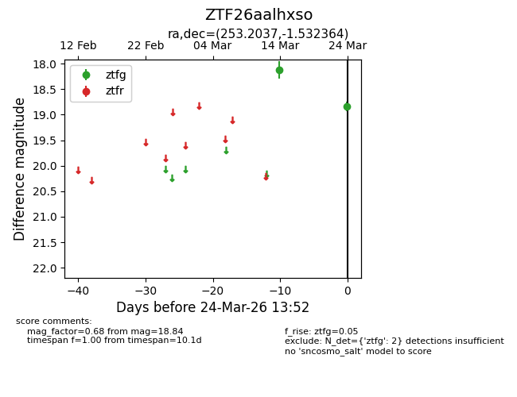
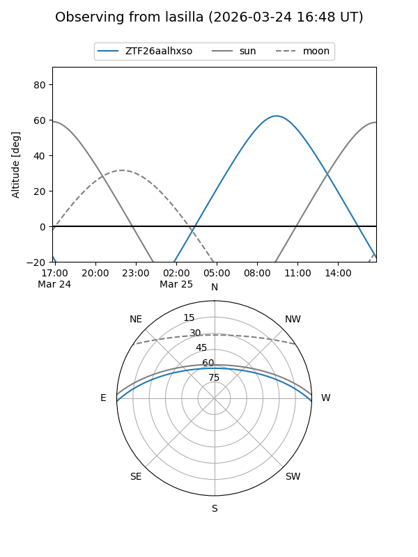
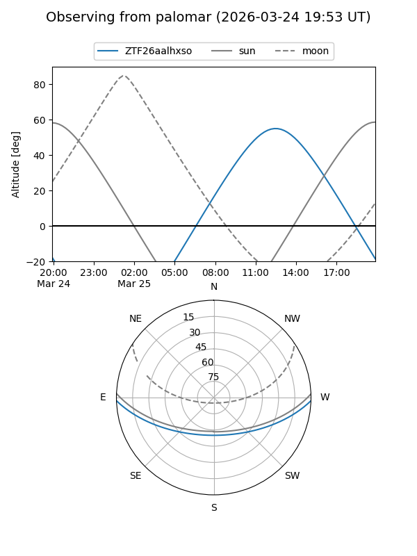

ZTF26aalhxso
Target ZTF26aalhxso at 2026-03-24 13:54
Aliases and brokers:
FINK: link
Lasair: link
ALeRCE: link
alt names
ZTF26aalhxso (ztf,fink_ztf)
Coordinates:
equatorial (ra, dec) = 253.2037,-1.53236
equatorial (HMS+DMS) = 16:52:48.89,-01:31:56.51
galactic (l, b) = (16.9174,+25.34098)
Flags:
Photometry:
last ztfg=18.84
2 ztfg detections
Lightcurve

Visibility


Additional plots